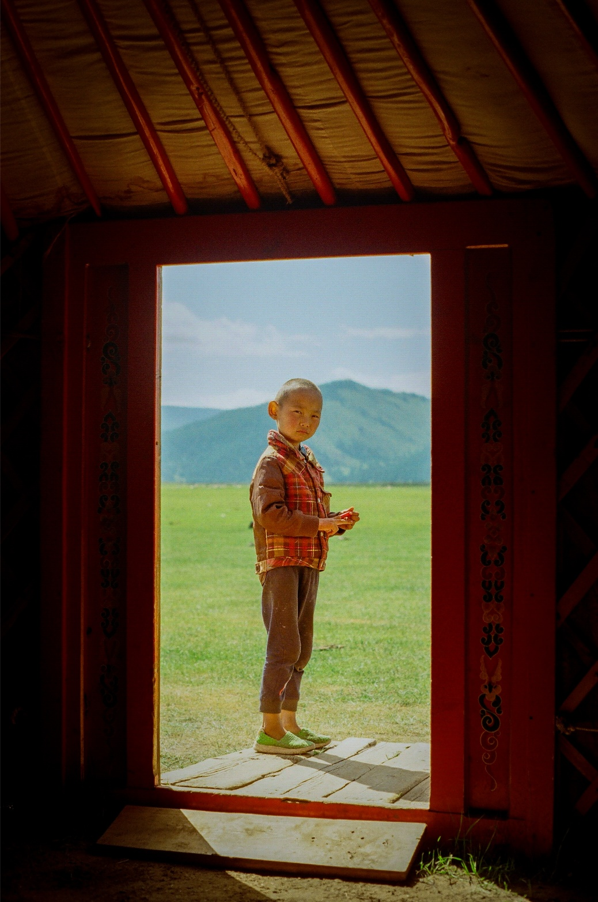
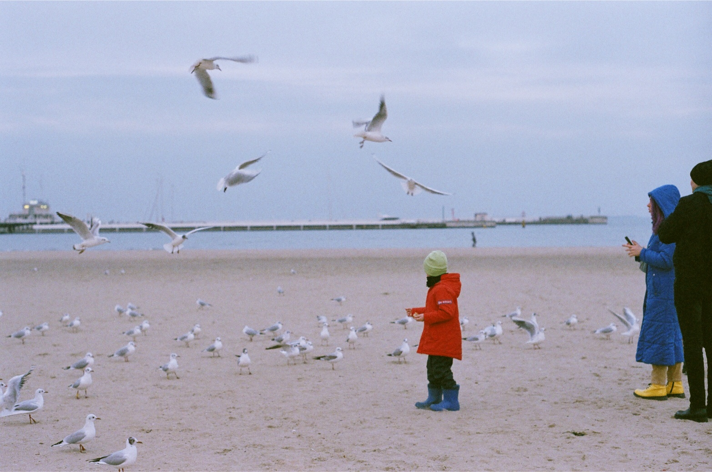
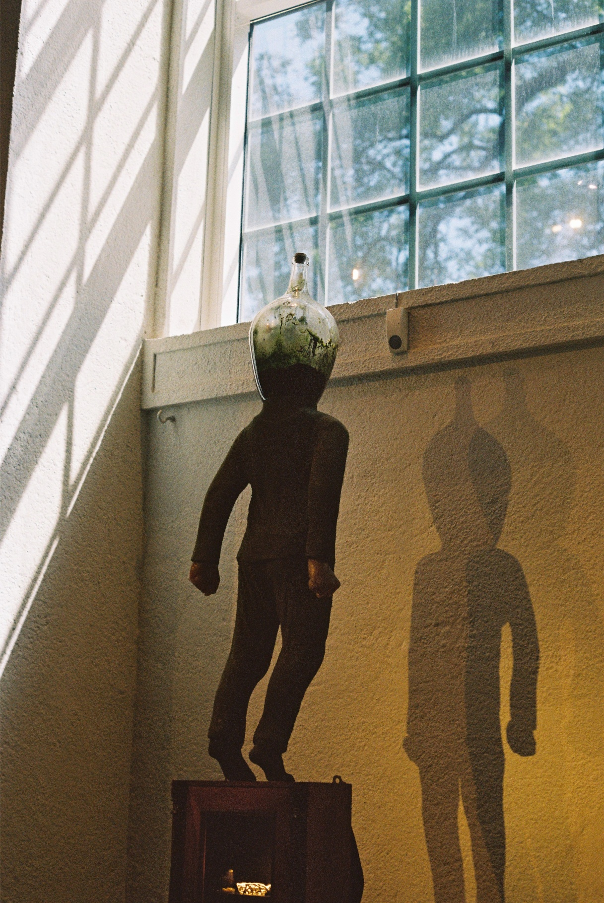

Visual Archive
A curated collection of analog frames.

Mongolia, 2026

Poland, 2023

Gothenburg, 2023

Shadow & Geometry
35mm / 2026

Harbour View
Medium Format / 2025

Urban Alley
35mm / 2026

Neon Reflection
35mm / 2025

Quiet Morning
35mm / 2026

Concrete Waves
35mm / 2025

Coastal Horizon
Medium Format / 2026

Footsteps
35mm / 2025

After Hours
35mm / 2026

Golden Hour
Medium Format / 2025

Fragmented Light
35mm / 2026

Passing Train
35mm / 2025

End of Roll
35mm / 2026
More visual work daily on Instagram.
@one_roll_three_months